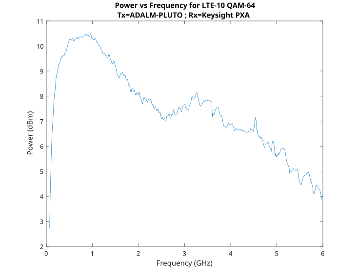
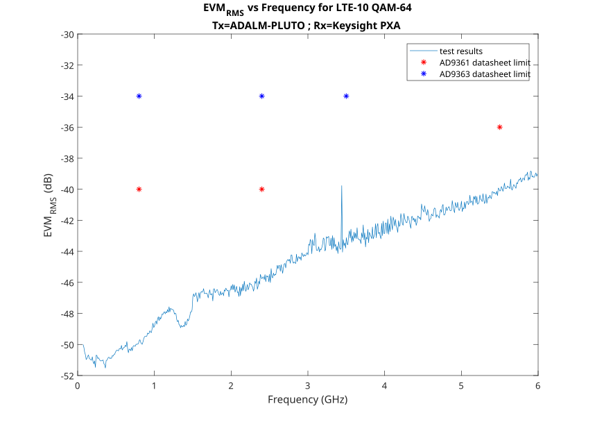

ADALM-PLUTO Transmit
Transmit Architecture
The AD9363 transmit chain is based on Direct Conversion techniques.

The Tx LO maintains constant amplitude, so optimal Signal-to-LO ratio requires running DACs near full scale, then adjusting output attenuation to control signal strength rather than reducing DAC input. Full scale into the DAC is 12 bits, though the HDL from ADI requires a 16-bit signal with lower 4 LSBs removed.
Transmit Performance
Two primary performance aspects are output power (transmission range) and output fidelity (transmission accuracy). Both are frequency dependent for the ADALM-PLUTO.
Transmit Power
Modern spectrum analyzers measure power across a channel bandwidth using multiple small power measurements averaged together. Testing with an LTE10 signal at various LO frequencies showed power measurements in the 9 MHz channel. A continuous wave test swept the LO from 70 MHz to 6 GHz.

The -10dB attenuation setting keeps analog output stages in linear range without saturation. The default setting is safe for looping Tx directly into Rx with an SMA cable—do not use less than -10dB attenuation for loopback.


Measurements should use dBFS or ADC codes rather than dBm or volts unless the AD9361 is properly calibrated.
Transmit Fidelity
LTE 10 (10MHz channel) transmission testing measured RF offset of 50Hz frequency error and EVM of -46dB (less than 0.5% RMS error). Average peak output for the 10MHz channel was -45dBm/Hz. Results vary with LO frequency, output power, and attenuation changes. Testing was conducted in an open lab; an RF chamber would eliminate commercial frequency degradation observed at LTE and WiFi frequencies.

